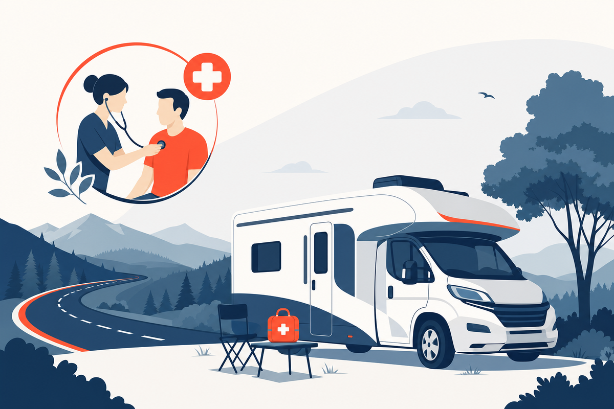

Key Takeaways
- Recurrent UTIs are crew's most common complaint — the likely driver is behavioral (delayed fluids/bathroom trips), not cabin pressure or dehydration itself.[4]
- Cabin dehydration is scientifically contested: one review finds increased water loss in dry cabin air, while the UK CAA says added fluid loss over 8 hours is small (~150 mL) and easily compensated.[7][8]
- No good evidence shows flying itself causes DVT in healthy people — risk rises with immobility beyond ~4 hours plus personal risk factors, not from flying itself.[4][10]
- NIOSH classifies aircrew as radiation-exposed workers due to cosmic radiation at cruising altitude — a documented exposure, not a cause for alarm.[2]
- Telehealth helps with non-emergency conditions and non-controlled refills during a layover in a covered state — but cannot issue an FAA medical certificate or manage an in-flight emergency.[6]

Who This Guide Is For
This guide is written for flight attendants, pilots, and other crew — roughly 90,000 to 110,000 flight attendants work in the United States according to the Bureau of Labor Statistics, plus tens of thousands more pilots and cockpit crew.[1] It is not written for occasional leisure travelers.
The core problem for crew is not income or insurance access — it is time and geography. A flight attendant might sleep in Seattle Monday, Denver Wednesday, and be on reserve in a fourth city by Friday. Standard primary care, booked weeks out in one city during business hours, does not fit that schedule. The practical question is less "what is wrong with me" and more "how do I get this looked at before my next flight."
This guide covers conditions that come up disproportionately often for crew: recurrent UTIs, sinus and ear pressure, jet lag and sleep disruption, blood clot risk with long-haul immobility, travelers' diarrhea, and fatigue and stress — each ending with what a clinician can and cannot reasonably do about it remotely.
Why the Job Makes You Sick the Way It Does
Commercial aircraft cabins are pressurized to an equivalent altitude of roughly 6,000–8,000 feet, with relative humidity typically only 10–20%, versus 40–50% in a typical building.[8] What that combination actually causes in a healthy adult is more nuanced than most crew wellness content admits.
Dehydration — a genuinely contested claim. A 2020 review in Nutrients describes increased insensible water loss in dry, low-pressure cabin air and argues common hydration advice likely understates real fluid needs.[7] The UK Civil Aviation Authority, by contrast, states cabin humidity does not cause clinical dehydration: added fluid loss over an 8-hour flight is roughly 150 mL, with no measurable change in plasma osmolality.[8] Both agree dry air causes uncomfortable drying of lips, mouth, and eyes. The honest summary: dry cabin air and long duty periods make it easy to under-hydrate as a matter of comfort and habit — not a proven dehydration pathology.
UTIs — a behavioral association, not a cabin-pressure effect. Long duty periods and limited lavatory access create two behaviors linked to UTIs: delaying fluids and delaying urination. Neither cabin pressure nor dehydration has been shown to directly cause UTIs — the mechanism runs through behavior, a fixable target.
Sinus and ear pressure is better supported mechanistically: repeated pressurization stresses the Eustachian tube, and crew flying with congestion are prone to barotrauma.[8] Circadian disruption from timezone crossing and back-of-the-clock flying is also well supported.[11]
DVT and immobility deserve precise framing: the CDC and a cabin-environment review both note there is no good evidence flying itself causes DVT in otherwise-healthy people — the risk factor is immobility beyond roughly 4 hours, compounding with personal risk factors like recent surgery, hormonal contraceptives, or a prior clot.[10][9] Cosmic radiation is a real, quantified exposure: NIOSH classifies aircrew as radiation-exposed workers due to cosmic radiation at cruising altitude — a recognized occupational fact, not a reason for alarm.[2]
Recurrent UTIs: The Most Common Crew Complaint
Ask any group of flight attendants about their most common health frustration and UTIs come up quickly. The plausible explanation is behavioral, not environmental: long duty periods, inconvenient bathroom breaks, and irregular hydration combine to produce the two habits most linked to UTI risk — delayed voiding and inadequate fluids. This does not mean cabin pressure or dehydration directly causes infection; it means working conditions make prevention harder.
Fever, flank or back pain, nausea/vomiting, blood in the urine, pregnancy, or infections recurring within weeks of finishing antibiotics all warrant an in-person visit with an exam and urine culture — not a remote-only visit or empiric self-treatment. These can indicate a kidney infection or resistant organism needing targeted, physician-directed treatment.
For uncomplicated cystitis without red flags, IDSA guidance supports first-line oral agents — nitrofurantoin, trimethoprim-sulfamethoxazole where local resistance is below ~20%, and fosfomycin — selected by a clinician.[5] Choosing and dosing an antibiotic is physician-managed; this guide does not provide self-dosing instructions. For recurrent UTIs, the useful step is a physician conversation about a prevention plan.
Practical prevention: drink fluids consistently through the duty day, not just at layovers, and use the lavatory when possible. Cranberry and probiotics have inconsistent trial evidence — reasonable adjuncts, not substitutes for hydration or physician-directed treatment.
Sinus and Ear Pressure
Barotrauma — pain or injury from unequal pressure across the eardrum or sinus cavities — is one of the most mechanically straightforward problems here. As cabin pressure changes during ascent and descent, the middle ear and sinuses equalize through the Eustachian tube and sinus openings. When those passages are swollen from a cold, allergies, or sinusitis, equalization fails, ranging from uncomfortable pressure to, in more severe cases, eardrum injury.
The practical question crew face repeatedly is whether to fly with congestion at all. Mild allergy congestion responding to a nasal steroid or antihistamine is generally manageable. Active sinus infection with facial pain, drainage, or fever is different — flying can worsen symptoms, and distinguishing infection from a purely mechanical pressure problem is worth doing first.
Short-acting decongestants before descent are commonly used but carry cautions: oral decongestants can raise blood pressure and cause insomnia, and nasal sprays used more than a few days can cause rebound congestion worse than the original problem. These are reasonable tools for an isolated flight, not a daily crutch for chronic congestion, which deserves its own evaluation.
Jet Lag, Sleep, and Back-of-the-Clock Flying
Jet lag results from a mismatch between the internal circadian clock — set primarily by light exposure — and the current time zone. Crossing multiple zones, especially eastward, measurably disrupts sleep timing, GI function, alertness, and mood; back-of-the-clock flying that requires safety-critical work during the body's normal sleep window compounds the same physiology even without crossing zones.[11]
Light timing is the most evidence-supported lever for shifting circadian rhythm. Melatonin can also help: a Cochrane review of melatonin for jet lag found it effective at reducing symptoms when taken close to the target bedtime at the destination, with correct timing being the critical variable, since mistimed melatonin can shift the clock the wrong way.[12] Effect sizes are best described as real but modest, and dependent on that timing.[11]
Crew should be cautious about sedating medications to force sleep on an unfamiliar schedule. Benzodiazepines and other sedative-hypnotics blunt next-day alertness in ways unwelcome in a safety-sensitive job, and none are appropriate for telehealth prescribing here — controlled substances are not prescribed through telehealth in this practice. Light exposure, a portable wind-down routine, and melatonin used thoughtfully are the more sustainable approach.
Blood Clots and Long-Haul Immobility
Deep vein thrombosis (DVT) is a clot that forms in a deep vein, typically in the leg. The honest framing: there is no good evidence that flying itself, independent of immobility, causes clots in otherwise-healthy people. The CDC identifies more than 4 hours of continuous immobility, by any mode of transportation, as the relevant exposure, not flying specifically.[10] A detailed aircraft cabin environment review reaches the same conclusion.[9]
Long-haul flights do raise relative risk, and it climbs with duration: the risk rises roughly 1.1-fold per additional hour in the air, reaching about a threefold increase for long flights compared with not traveling by air.[14] But the absolute risk for a healthy traveler stays low, on the order of one event per 4,656 long-haul flights.[14] The dominant drivers are immobility beyond roughly 4 hours and personal risk factors, not flying itself.
| Risk factor | Why it matters |
|---|---|
| Immobility beyond ~4 hours | Slows venous return via reduced calf-muscle pump activity |
| Recent surgery or injury (~3 months) | Tissue injury and reduced mobility raise clotting risk |
| Estrogen-containing contraceptives or hormone therapy | Increases clotting factor activity |
| Pregnancy and postpartum period | Hypercoagulability persists for weeks after delivery |
| Prior blood clot or clotting disorder | Strongest predictor of recurrence |
| Obesity, active cancer, age over ~40 | Each raises baseline risk |
Adapted from CDC guidance on blood clot risk factors with travel.[10]
The average one-in-4,656 figure reassures the healthy majority but understates risk for crew carrying the factors above, which is where prevention actually matters. For crew, the practical exposure is less any single flight and more the cumulative immobility of reserve duty, long deadheads, and jump-seat repositioning across a trip. Movement — walking the aisle, calf exercises, avoiding crossed-leg sitting for hours — plus adequate hydration are reasonable, low-cost habits, especially for crew carrying the personal risk factors above. Warning signs warranting prompt, same-day evaluation: unilateral leg swelling, warmth, redness, or pain, and any new shortness of breath or chest pain, which can indicate pulmonary embolism and needs emergency evaluation.
Traveler's Diarrhea and Layover Food
Crew eat on the road more than almost any other profession, with routine exposure to food- and water-borne pathogens that cause travelers' diarrhea, particularly on international layovers. The CDC Yellow Book's guidance is straightforward: careful food and water selection reduces but does not eliminate risk.[3]
Oral rehydration is the foundation of treatment for most cases — replacing fluids and electrolytes matters more than stopping the diarrhea itself. Some travelers, ahead of a trip, discuss a "standby therapy" plan with a physician: a specific antibiotic or antimotility regimen pre-arranged for use only if defined symptoms develop. This is physician-guided and individualized, not a general instruction to self-treat — this guide does not provide antibiotic self-dosing instructions.
Seek care — rather than over-the-counter measures alone — for high fever, blood in the stool, signs of significant dehydration, or symptoms persisting beyond a few days despite rehydration.
Sleep Debt, Stress, and Mental Health
The cumulative toll of irregular schedules, time-zone disruption, and time away from support systems is a real occupational health issue for crew, not a personal failing. Chronic sleep debt affects mood regulation and decision-making, and repeated time away from a stable routine compounds ordinary work stress in ways that are easy to normalize.
Real resources exist. Union-affiliated Employee Assistance Programs — including the AFA-CWA's EAP for flight attendants — provide confidential counseling and referral services designed for aviation workers, often at no direct cost.[13] APFA offers comparable resources, and MedAire's aeromedical support extends to broader crew wellbeing programs at some carriers. None require reaching a crisis point to use.
Fatigue dismissed as "just the job" can mask treatable depression or anxiety, and unaddressed sleep debt compounds every other issue in this guide. Seeking help is appropriate self-maintenance for a demanding job, not an exception to it.
How Crew Actually Get Care Today (and the Gaps)
Crew health-seeking behavior has developed its own informal culture, often out of necessity: peer advice in crew rooms, over-the-counter self-treatment, and "waiting until I'm home" are common, given how poorly standard scheduled care fits this job.
Formal options exist. Some airlines maintain onsite clinics at major crew bases during business hours, useful when schedule and location line up but less so for reserve crew rarely at base. Union EAPs cover mental health and referrals well but are not a substitute for acute evaluation. Employer virtual-care benefits can be a good first stop when available, and local urgent care during a layover remains the most reliable option for anything requiring an exam.
The honest gap: off-hours illness, reserve status, and regional-carrier assignments create windows where none of the above line up with when and where a crew member needs care. That gap is where telehealth has a legitimate, bounded role — one additional option for the hours and locations the existing system does not reliably cover.
What Telehealth Can and Cannot Do for Crew
For crew, telehealth occupies a clearly defined place: it is well-suited to the routine, non-emergency needs that a rotating multi-state schedule makes hard to handle in person, and it is explicitly not a substitute for aeromedical certification, emergency care, or anything requiring a physical exam. Understanding that boundary is what keeps it useful rather than risky.
Telehealth-Appropriate
- Non-emergency acute conditions: Uncomplicated UTIs, mild sinus congestion, and similar issues, evaluated by video when the patient is physically located in a state the clinician is licensed in
- Non-controlled medication refills: Continuing established maintenance medications (blood pressure, thyroid, asthma, allergy, contraception) when clinically appropriate
- Jet-lag and behavioral counseling: Reviewing light timing, sleep strategy, and appropriate melatonin use for a specific rotation
- Same-day access on a layover: Reaching a clinician from a hotel in a covered state, without finding and traveling to an unfamiliar urgent care
Requires In-Person Evaluation or a Different Provider
- FAA medical certificates and fitness-to-fly: These must be handled by an FAA-designated Aviation Medical Examiner (AME), never a general telehealth clinician. The FAA maintains an official AME locator.[6]
- In-flight medical emergencies: These are managed by the airline's ground-based aeromedical support, such as MedAire/MedLink or STAT-MD, together with 911 once the aircraft is on the ground
- Controlled substances: Not appropriate for this telehealth pathway; these require a local prescriber
- Anything needing an exam, imaging, or labs: Red-flag symptoms and conditions requiring physical examination or testing should be triaged to in-person care
One licensing detail matters for crew specifically: a telehealth clinician is licensed to see patients based on where the patient is physically standing at the time of the visit, not where they are based. A rotation that keeps landing in states a given clinician is not licensed in will keep hitting that access gap regardless of the service used. As with any care decision, when in-person evaluation is indicated, that is the right path — telehealth is the convenient option for the narrow band of problems where a video visit is genuinely sufficient.
Frequently Asked Questions
Options depend on base and airline. Some carriers offer onsite airport clinics during business hours, and union EAPs can point crew toward local resources. For non-emergency issues on a layover in a covered state, a video visit can provide same-day evaluation and, when appropriate, a prescription sent to a local pharmacy. Anything requiring an exam, imaging, or labs still needs urgent care.
Cabin pressure and dehydration are not established causes of UTIs. The more likely explanation is behavioral: long duty periods, service demands, and limited lavatory access encourage delayed bathroom trips and under-hydration, both associated with UTI risk in the broader literature. Consistent hydration and voiding when possible — not a cabin-air mechanism — are the modifiable factors most within a crew member's control.[4]
Often yes, for non-controlled medications, if you're physically located in a state where your clinician is licensed at the time of the visit and the medication is appropriate for remote management. Controlled substances generally cannot be prescribed this way. Bring your medication list and confirm your current state before booking, since coverage is state-specific, not airline-specific.
It can, with a key limitation: a clinician must generally be licensed in the state where you are physically located at the time of the visit, not your home state. Crew based in or regularly laying over in covered states can use it opportunistically for eligible conditions. Reserve, part-time, and regional-carrier schedules crossing many states make this inconsistent — a real access gap, not a fully solved problem.
No. FAA medical certification for pilots and other certificated airmen must be performed by an FAA-designated Aviation Medical Examiner (AME), using FAA-specific protocols and required forms that a general telehealth visit is not authorized to complete. This applies regardless of how routine the underlying condition seems. Use the FAA's AME locator to find a designated examiner near your base or home.[6]
No. In-flight medical events should go through the airline's established emergency protocol, which typically connects crew to ground-based aeromedical support services such as MedAire/MedLink or STAT-MD, staffed by physicians experienced in in-flight decisions. On the ground, call 911 or local emergency services. General consumer telehealth platforms are not equipped or positioned for in-flight emergencies.
A reasonable kit includes oral rehydration salts, a thermometer, basic wound supplies, personal prescription medications with extra buffer for delays, and motion-sickness and antidiarrheal remedies discussed in advance with a physician. Skip self-carried antibiotics without a physician's guidance — treatment should be matched to a diagnosis, not carried speculatively for unknown future use.[3]
Bottom Line
Cabin crew face a recognizable, largely predictable set of health issues driven mostly by schedule and behavior, not exotic cabin physiology. Recurrent UTIs trace back to delayed hydration and bathroom access, not cabin pressure. The dehydration claim itself is genuinely contested and should be treated as a comfort issue, not a settled diagnosis. DVT risk comes from immobility and personal risk factors, not flying itself. Sinus and ear barotrauma, jet lag, and cosmic radiation exposure have the strongest direct evidence and call for practical prevention rather than alarm.
The bigger unsolved problem is access, not diagnosis: a job that puts people in a different state every few days does not fit scheduled, single-location primary care. Employer clinics, union EAPs, and local urgent care each cover part of that gap; telehealth covers non-emergency conditions and non-controlled refills, in states where the clinician is licensed. It does not replace an FAA Aviation Medical Examiner for certification, and it is never the right channel for an in-flight emergency, which belongs with ground-based aeromedical support and, on the ground, 911.
References
- U.S. Bureau of Labor Statistics. "Occupational Outlook Handbook: Flight Attendants." https://www.bls.gov/ooh/transportation-and-material-moving/flight-attendants.htm
- National Institute for Occupational Safety and Health (NIOSH). "Aircrew Safety & Health." Centers for Disease Control and Prevention. https://www.cdc.gov/niosh/topics/aircrew/
- Centers for Disease Control and Prevention. "Travelers' Diarrhea." CDC Yellow Book 2024: Health Information for International Travel. https://wwwnc.cdc.gov/travel/yellowbook/2024/preparing-international-travelers/travelers-diarrhea
- Centers for Disease Control and Prevention. "Deep Vein Thrombosis & Pulmonary Embolism and Air Travel." CDC Yellow Book 2024: Health Information for International Travel. https://wwwnc.cdc.gov/travel/yellowbook/2024/air-land-sea/deep-vein-thrombosis-and-pulmonary-embolism
- Infectious Diseases Society of America. "Uncomplicated Cystitis and Pyelonephritis (UTI) Clinical Practice Guideline." https://www.idsociety.org/practice-guideline/uncomplicated-cystitis-and-pyelonephritis-uti/
- Federal Aviation Administration. "Aviation Medical Examiner (AME) Locator." https://www.faa.gov/pilots/amelocator
- Zubac D, Buoite Stella A, Morrison SA. "Up in the Air: Evidence of Dehydration Risk and Long-Haul Flight Effects." Nutrients. 2020;12(9):2574. PMC7551461. https://pmc.ncbi.nlm.nih.gov/articles/PMC7551461/
- UK Civil Aviation Authority. "Physiology of Flight — Guidance for Health Professionals." https://www.caa.co.uk/air-passengers/about-your-trip/health-and-medical/guidance-for-health-professionals/physiology-of-flight/
- Aircraft Cabin Environment review. PMC7152029. https://pmc.ncbi.nlm.nih.gov/articles/PMC7152029/
- Centers for Disease Control and Prevention. "Understanding Your Risk for Blood Clots with Travel." https://www.cdc.gov/blood-clots/risk-factors/travel.html
- Jet lag syndrome: pathophysiology and treatment. PMC3630947. https://pmc.ncbi.nlm.nih.gov/articles/PMC3630947/
- Melatonin for the prevention and treatment of jet lag (Cochrane review). PMC8958662. https://pmc.ncbi.nlm.nih.gov/articles/PMC8958662/
- Association of Flight Attendants-CWA (AFA-CWA). "Employee Assistance Program." https://www.afacwa.org/employee_assistance
- Kuipers S, Cannegieter SC, Middeldorp S, Robyn L, Büller HR, Rosendaal FR. "The Absolute Risk of Venous Thrombosis after Air Travel: A Cohort Study of 8,755 Employees of International Organisations." PLoS Medicine. 2007;4(9):e290. PMC1989755. https://pmc.ncbi.nlm.nih.gov/articles/PMC1989755/